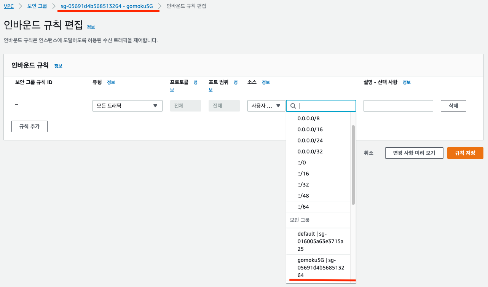

ElastiCache 구성
ElastiCache 구성하기
다음으로 ElastiCache를 설정합니다. 이것은 순위 정보를 저장할 것입니다.
- AWS 콘솔에서 ElastiCache로 이동합니다. https://console.aws.amazon.com/elasticache
- ElastiCache cluster를 생성합니다. 우리는 Redis 엔진을 사용할 것입니다.
- 다음 스크립 캡처와 같이 필요한 정보를 입력해줍니다.

- Name: gomokuranking
- Engine: 5.0.x (5.0.4 이상의 버전을 권고드립니다)
- Port: 6379 (default)
- Parameter group: default
- Number of replicas: 0
- 모든 설정이 완료되면, Create 버튼을 클릭하여 Redis 클러스터를 생성합니다. (시간이 조금 걸리기 때문에 다음 단계인 SQS 생성을 먼저 진행할 수도 있습니다. )
- 만약 특정한 VPC내에서 생성하고 싶다면 Advanced Redis setting 페이지로 이동하여 여러분의 VPC 정보를 입력합니다.
- 생성한 Redis 클러스터의 상태가 available이 되면 Primary Endpoint를 따로 기록해둡니다. 추후 Lambda 생성 시에 해당 Endpoint가 사용됩니다.
- 생성한 ElastiCache의 보안을 강화하기 위하여 gomokuranking 클러스터에 안전한 보안 그룹을 생성하여 할당합니다. 이번 실습에서는 아주 간단한 보안그룹 정책을 생성하여 할당하겠습니다.
- VPC 콘솔에서 https://console.aws.amazon.com/vpc 좌측의 Security Group 메뉴를 선택하고 Create Security Group 버튼을 클릭합니다.
- Name tag, Group name 등에 적절한 정보를 입력해주고, VPC는 실습을 진행 중인 default VPC를 선택합니다. (리전에 VPC가 하나라면 default가 따로 표시되지는 않습니다)
- 보안 그룹 내의 통신을 위하여 inbound 정책을 수정해야 합니다. 생성한 보안 그룹을 선택하고 Inbound Rules 탭을 클릭합니다.
- Edit 버튼을 클릭하고 다음 스크린 캡처와 같이 정책을 생성합니다. 여기서 Source 에는 보안 정책 자신의 Group ID를 입력합니다. 이렇게 함으로써 이 보안 그룹을 할당한 호스트와 서비스들끼리 통신을 할 수 있습니다. 생성한 보안 그룹을 기억해 둡니다.

- Type: All traffic
- Protocol: All
- Source: Security Group itself
- 보안 그룹 생성을 완료하였다면 다시 ElastiCache 페이지로 돌아와 생성한 Redis 클러스터를 선택합니다.
- 클러스터를 선택하고 상단의 Modify 버튼을 클릭하고, 팝업 메뉴에서 VPC Security Group 에 방금 생성한 Security Group 을 선택한 뒤 반영합니다.
ElastiCache 설정을 완료하였습니다. 다음으로 SQS 설정을 할 차례입니다.